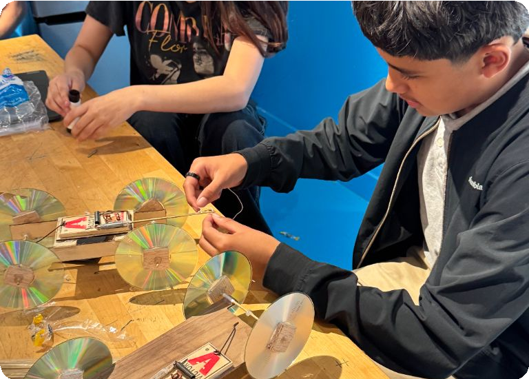

Investigate and solve
Investigate and solve
Explore events where you use research, scientific evidence, technical knowledge, or data to solve problems.

Team of 3–6 · Research display and portfolio
Biotechnology
You will explain how biotechnology can improve the food people grow or eat.
Explore BiotechnologyIndividual · Test and prepared presentation
Cybersecurity
You will propose how a company should respond when an employee takes sensitive data.
Explore CybersecurityTeam of 2–3 · Data display and research portfolio
Data Science and Analytics
You will use wildlife data to recommend conservation priorities for Yellowstone.
Explore Data Science and AnalyticsTeam of 2 · Tests and on-site circuit challenge
Electrical Applications
You and a partner will build and measure a circuit from a diagram.
Explore Electrical ApplicationsTeam of 2 · Tests and practical demonstration
Forensic Technology
You and a partner will demonstrate a forensic science skill.
Explore Forensic TechnologyTeam of 2–3 · Display, pamphlet, video, and possible interview
Medical Technology
Your team explains a medical condition and a technology used to address it.
Explore Medical TechnologyTeam of 2 · On-site construction and performance testing
Problem Solving
Your team designs and builds a solution to a problem revealed at the conference.
Explore Problem SolvingTeam of 3 · Test, then team questions
Tech Bowl
Put your technology knowledge to work.
Explore Tech Bowl